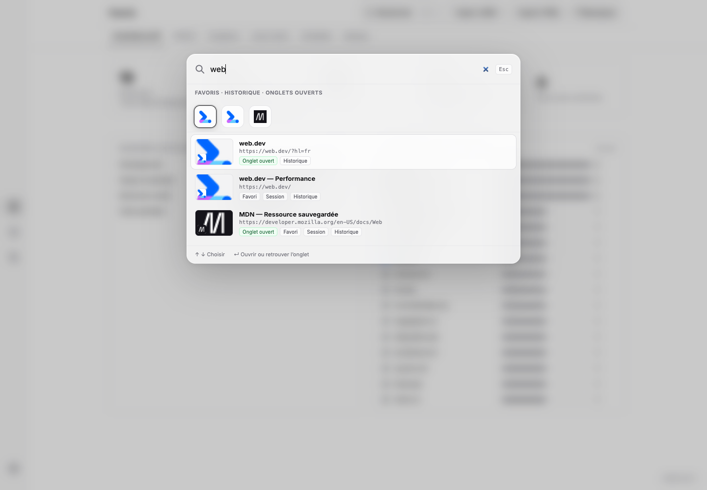
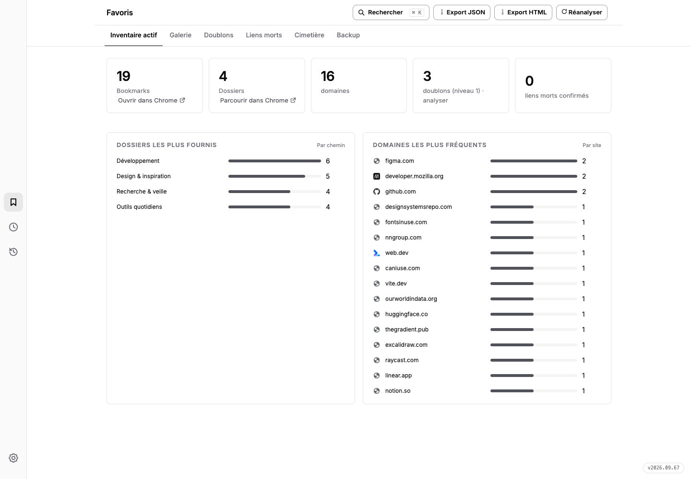
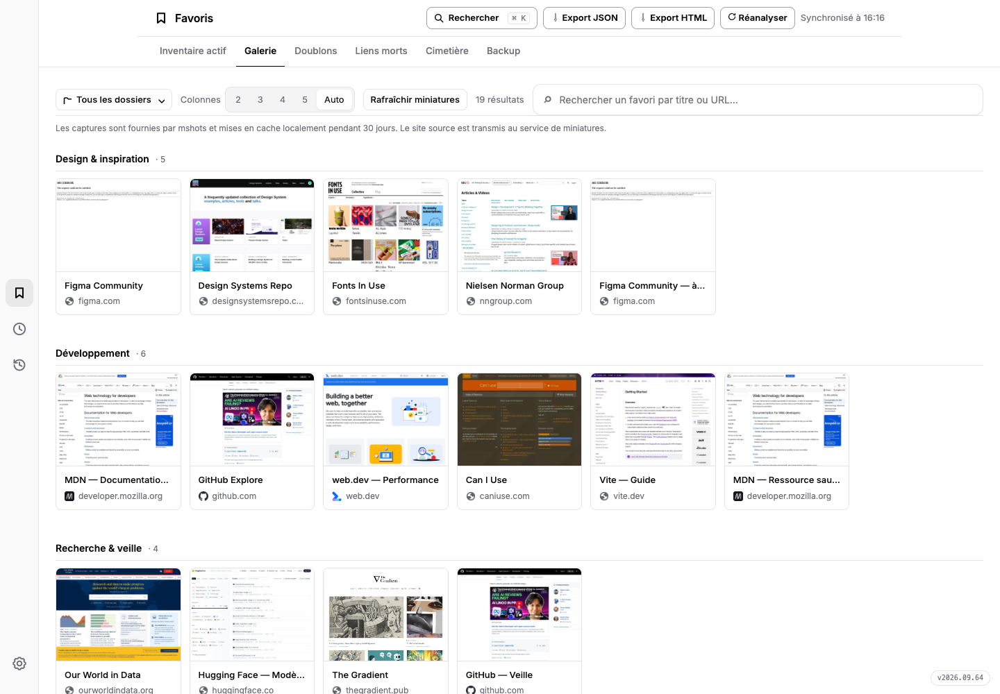
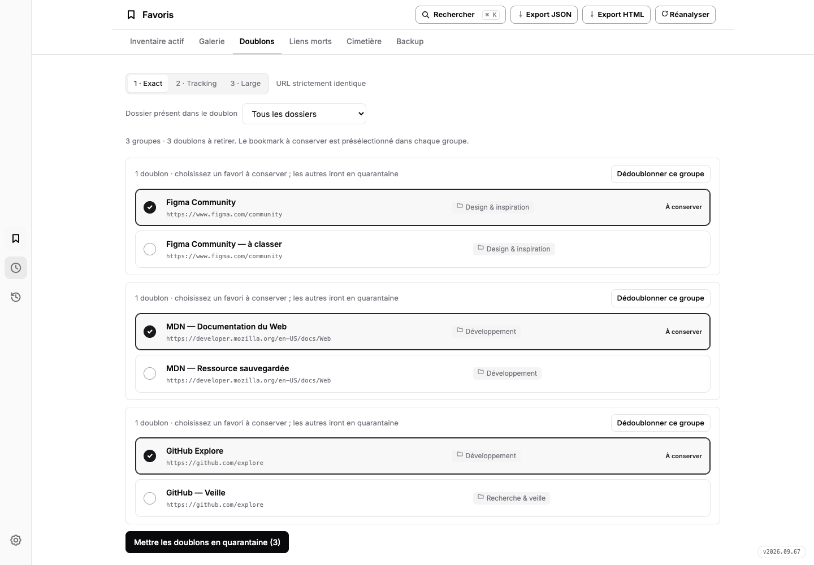
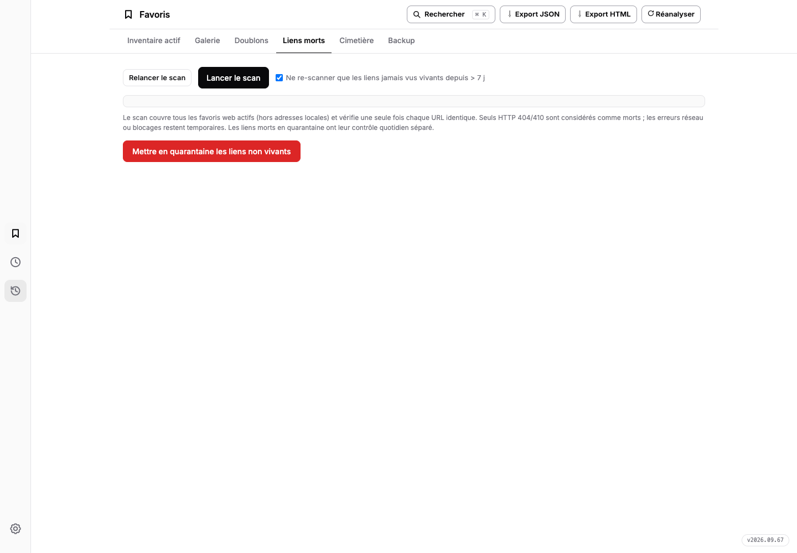
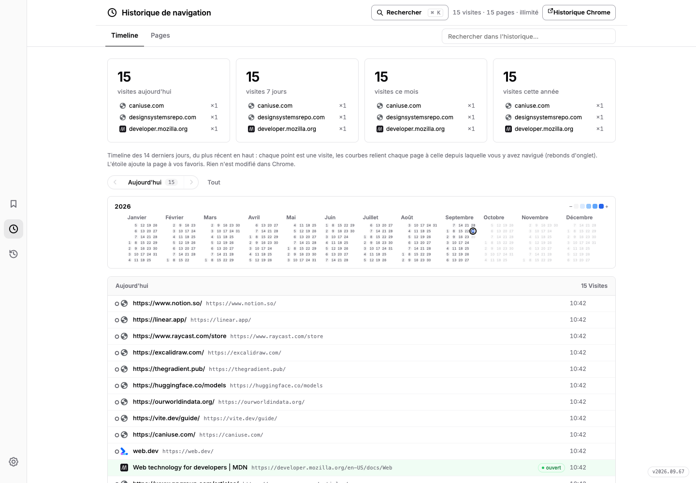
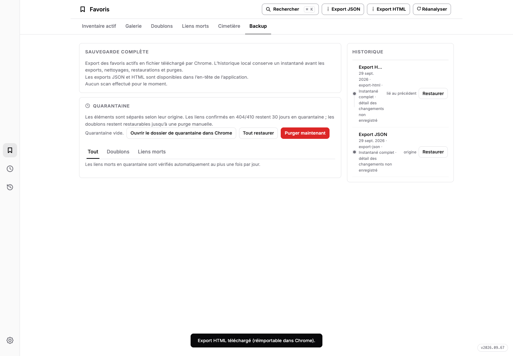
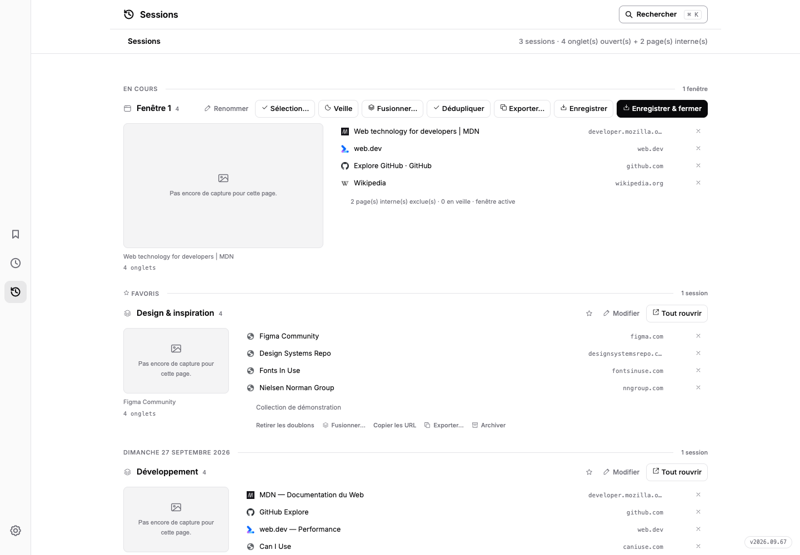

Les favoris conservés
Des milliers de liens accumulés, rangés dans des dossiers qu'on ne rouvre plus.
PK Web Memory
Favoris, historique et sessions réunis dans un seul espace.
Explorez, nettoyez, retrouvez — le tout en local, dans Chrome.
« Votre navigateur se souvient de tout. PK Web Memory vous aide à y voir clair. »

Le problème
Des milliers de liens accumulés, rangés dans des dossiers qu'on ne rouvre plus.
Un historique plein de bruit, où retrouver une page d'il y a trois jours relève du hasard.
Trente onglets en attente, qu'on garde ouverts par peur de perdre le fil.
PK Web Memory réunit les trois — et rend lisible ce que Chrome accumule en silence.
Tout le terrain de jeu
Les captures montrent l'interface réelle de l'extension, alimentée par un jeu de données fictif de 19 favoris. Chaque image s'agrandit d'un clic.
Une palette façon Spotlight, ouverte au clavier ou dès la première frappe. Elle interroge à la fois vos favoris, votre historique Chrome et vos onglets ouverts, classe les résultats par pertinence et les affiche en rangée de tuiles visuelles façon dock. Un même champ pour ouvrir un site, reprendre une lecture ou retrouver la fenêtre qui héberge déjà la page.

Totaux, chemins de dossiers et domaines classés par fréquence, avec barres de progression et favicons. Votre collection devient un territoire lisible — et chaque tableau un point de départ de recherche.

Vos favoris en cartes visuelles : recherche, filtre par dossier, colonnes ajustables. Les miniatures viennent de WordPress.com mshots et restent en cache local 30 jours (60 maxi). Le mode « favicônes uniquement » fait tout afficher sans la moindre requête.

1 · URL stricte. 2 · sans traçage (utm, fbclid…). 3 · sans http/https, www ni paramètres. Le favori le plus ancien est toujours conservé ; les autres partent en quarantaine, restaurables jusqu'à une purge manuelle.

Scan parallèle réglable (vitesse, délai par site, re-vérification). Seuls les HTTP 404/410 confirmés deviennent « morts » ; les erreurs temporaires restent « à vérifier ». Les pages chrome:// et les fichiers locaux ne sont jamais scannés. Quarantaine restaurable, purge automatique après le délai choisi (30 jours par défaut).

Votre navigation passée en vue arborescente, jour par jour, avec recherche et profondeur de balayage au choix (illimitée à 1 an). L'étoile d'une ligne ajoute la page à vos favoris sans la chercher dans les dossiers.

Exports JSON/HTML de vos favoris actifs, et un historique local d'instantanés reliés entre eux (jusqu'à 30 versions) créé à chaque export, nettoyage ou restauration. Restaurer rétablit les favoris manquants sans effacer les plus récents. Les exports sont de simples fichiers téléchargés, séparés de cet historique.
La pièce maîtresse
Une timeline fusionnée : la fenêtre en cours reste dépliée en tête, les journées précédentes se déplient sur place. Chaque ligne porte titre, domaine et aperçu de page ; une croix ferme l'onglet ou retire le lien, avec annulation.

Démo interactive — pure simulation
Une reconstitution du tableau de bord réel — rail latéral, onglets, palette ⌘K, timeline de sessions — rejouée avec des données fictives. Cherchez, parcourez l'inventaire et la galerie, enregistrez une session, mettez des doublons en quarantaine. Rien n'est lu dans votre navigateur, et tout se réinitialise.
The interactive dashboard and product screenshots show the extension’s original French interface.
Aussi, dans la barre d'outils
Le nombre d'onglets ouverts — ou d'onglets en double, la même page ouverte deux fois. Au choix dans les réglages, mis à jour en direct, ou « aucune ».
Ctrl+T ouvre l'extension directement sur la section choisie : sessions, galerie, inventaire, historique ou groupes d'onglets. Désactivable d'un réglage.
Le service worker endort les onglets après 15, 30 ou 60 minutes d'inactivité — jamais l'onglet actif, les épinglés ou ceux qui jouent du son.
Installation
La méthode d'installation présentée ici utilise le code source en mode développeur, sans build ni dépendance.
git clone.chrome://extensions. Collez l'adresse dans la barre d'URL de Chrome.extension/ du dépôt.Mise à jour : remplacez les fichiers du dossier chargé par ceux de la nouvelle version, puis cliquez sur ↻ « Recharger » sur la carte de l'extension. La version datée est affichée dans « À propos ».
Questions fréquentes
Les sessions, réglages, caches et instantanés sont conservés dans le stockage local de l'extension (chrome.storage.local). Les favoris et l'historique restent ceux de Chrome ; leur éventuelle synchronisation dépend des réglages de Chrome. L'extension n'ajoute pas de compte ni de synchronisation propre. Désinstaller l'extension supprime son stockage local : exportez ce que vous souhaitez garder. Les requêtes externes des miniatures et des scans sont détaillées ci-dessous.
Favoris, historique, onglets et groupes d'onglets servent à lire et organiser votre navigation. Stockage et stockage illimité conservent les données de l'extension en local. Favicon affiche les icônes ; alarmes pilote les tâches planifiées. L'accès aux sites http/https permet les miniatures et les scans de liens. Ces permissions concernent l'extension installée, pas le playground de cette page.
En mode mshots, l'URL concernée est transmise à WordPress.com mshots pour générer une miniature, ensuite mise en cache localement pendant 30 jours. Le mode « favicônes uniquement » évite les requêtes mshots ; certaines favicônes de secours peuvent utiliser Google S2 avec le domaine. Les sessions peuvent aussi afficher des captures locales des pages visitées, avec un repli mshots autorisé ou non selon le réglage choisi.
Il envoie une requête vers chaque URL à vérifier, sans cookies ni identifiants. Les pages chrome:// et les fichiers locaux ne sont jamais scannés. Au-delà de 300 URL, l'extension demande confirmation avant de lancer. Seuls les statuts 404/410 confirmés marquent un lien mort ; un lien vivant recontrôle plus tard, un lien mort tous les jours jusqu'à résolution.
Non : c'est une simulation pédagogique autonome, avec des données fictives et des actions limitées à la page. Elle n'utilise pas les API de l'extension et n'accède pas à vos fichiers ; seules requêtes externes : les miniatures et favicônes des sites de démonstration, chargées via mshots et Google S2 exactement comme la galerie réelle. Les huit captures montrent, elles, la vraie extension exécutée dans un profil Chrome jetable, avec un jeu de démonstration distinct. Aucun élément de l'interface n'a été redessiné pour les captures.
Cette page renvoie au dépôt GitHub pour l'installation en mode développeur, pas à une fiche du Chrome Web Store. Le code source complet est consultable avant de charger l'extension.
Vie privée
Favoris, visites, sessions, réglages et sauvegardes sont traités dans Chrome et conservés dans le stockage local de l'extension. Aucun compte, aucun analytics, aucune publicité. Trois usages déclenchent une requête web — toujours explicites, toujours détaillés ci-contre.
Lire la politique de confidentialitéSoutenir
PK Web Memory est développé et maintenu par mondary.design. Si elle vous fait gagner du temps, un café sur Ko-fi aide à la faire vivre.
Soutenir sur Ko-fi